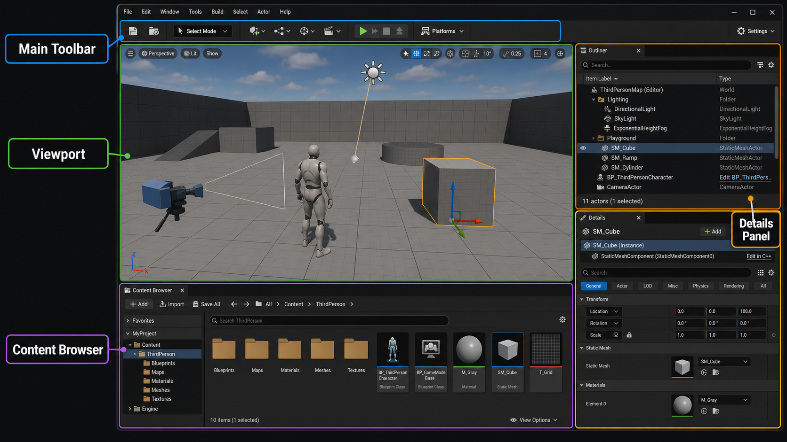

2주차 1교시 — 에디터 인터페이스 해부 + 프로젝트 구조 (학생용)
관련 문서
| 관계 | 문서 |
|---|---|
| 강의 계획서 | 강의계획서: Game Engine II |
| 강의 아웃라인 | 2주차 아웃라인: 에디터 인터페이스 |
- 언리얼엔진 5 에디터 인터페이스의 5대 구성 요소(Viewport / Outliner / Details Panel / Content Browser / Main Toolbar)의 역할을 설명할 수 있다
- 프로젝트를 직접 생성하고 프로젝트 폴더 구조와 에셋 이름 규칙을 이해할 수 있다
- 뷰포트 내비게이션 단축키를 활용해 3D 작업 공간을 자유롭게 이동할 수 있다
지난 주에 이번 학기 목표를 한 줄로 정리했습니다 — “언리얼엔진으로 영화 같은 걸 만든다.” 오늘부터 그 도구를 직접 사용합니다.
1교시는 에디터 인터페이스의 5대 패널을 해부하고, 프로젝트를 생성해 폴더 구조와 에셋 이름 규칙을 익히며, 뷰포트를 자유롭게 이동하는 방법을 다룹니다.
도입 — 언리얼 첫 실행
언리얼엔진을 처음 켰을 때, 어디서부터 시작해야 할까?언리얼을 켜면 에디터가 바로 열리는 게 아닙니다. 프로젝트 브라우저가 먼저 열립니다. 프로젝트를 만들어야 에디터가 열리고, 에디터가 열려야 설정도 할 수 있습니다. 순서는 프로젝트 생성 → 에디터 열림 → 환경 설정 입니다.
프로젝트 생성
작업 1 — 에픽게임즈 런처에서 언리얼엔진 실행
- 바탕화면 또는 시작 메뉴에서 Epic Games Launcher 를 실행하세요. → 검은색 배경의 런처 창이 열립니다.
- 런처 왼쪽 세로 메뉴에서 Library 탭을 클릭하세요. → Unreal Engine 아이콘이 상단에 있습니다. (오렌지색 로고)
- Unreal Engine 5.7 옆의 Launch 버튼을 클릭하세요. → 런처가 사라지고 잠시 후 프로젝트 브라우저 창이 열립니다. 이 창에서 프로젝트를 만들어야 에디터가 열립니다.
프로젝트 브라우저 화면 구성 — 창이 열리면 3개 영역으로 나뉘어 있습니다.
- 왼쪽 — 카테고리 탭: Games, Film, Architecture 등
- 가운데 — 템플릿 그리드: 각 템플릿이 썸네일 카드로 나열
- 오른쪽 — 설정 항목들: Blueprint/C++, 품질, Starter Content 등
- 오른쪽 하단 — 프로젝트 이름 칸 + 저장 경로 칸 + [Create] 버튼
설정표:
| 항목 | UI 위치 | 설정값 | 이유 |
|---|---|---|---|
| 카테고리 | 좌측 탭 | Games | 시네마틱도 Games 템플릿이 편함 |
| 템플릿 | 중앙 그리드 | Third Person | 기본 캐릭터 포함, 씬 확인에 편리 |
| Blueprint vs C++ | 우측 설정 | Blueprint | 코드 없이 시작 |
| Target Platform | 우측 설정 | Desktop | 기본값 유지 |
| Quality Preset | 우측 설정 | Maximum | 서버 사양 활용 |
| Starter Content | 우측 설정 | 체크 | 기본 에셋 포함 — 필수 |
| Project Name | 우측 하단 이름 칸 | 영문, 의미있는 이름 | 한글·공백·특수문자 금지 |
| Project Location | 우측 하단 경로 칸 | 지정된 서버 경로 | 수업 시작 전 안내된 경로 |
GameEngineII_Week02 처럼 영문 + 언더바만 사용하세요. 한글, 공백, 특수문자를 넣으면 오류가 발생합니다.
[Create] 를 클릭하면 에디터 로딩이 시작됩니다. 처음 실행할 때는 로딩에 시간이 걸릴 수 있습니다. 에디터가 열리면 바로 환경 설정을 진행합니다.
환경 설정 — 에디터 열린 후 진행
에디터가 열렸으면 이제 설정할 수 있습니다. Edit → Editor Preferences 는 에디터 메뉴라서 프로젝트 없이는 접근할 수 없습니다. 그래서 프로젝트를 먼저 만든 것입니다.
설정 1 — 에디터 언어를 영어로
작업 2 — 에디터 언어 변경
- 에디터 화면 최상단의 메뉴바를 보세요. → 왼쪽부터 [File] [Edit] [Window] [Tools] [Build] [Help] 순서입니다. 메뉴가 한글로 보이면 [편집] [창] 등으로 표시됩니다.
- [Edit] (또는 [편집]) 을 클릭하세요. → 드롭다운 메뉴가 아래로 펼쳐집니다.
- 드롭다운 맨 아래쪽의 [Editor Preferences…] (또는 [에디터 환경설정…]) 을 클릭하세요. → 별도의 큰 설정 창이 새로 열립니다. (탭이 아니라 독립 창)
- 설정 창 왼쪽 패널에서 [General] → [Region & Language] 를 클릭하세요. → 또는 설정 창 상단 검색창에 “language” 라고 타이핑하면 바로 찾아줍니다.
- 오른쪽 영역에서 [Editor Language] 항목을 찾으세요. → 드롭다운 박스를 클릭하면 언어 목록이 펼쳐집니다. [English] 를 선택하세요.
- “에디터를 재시작해야 적용됩니다” 알림이 뜨면 [Restart Now] 를 클릭하세요. → 에디터가 닫혔다가 다시 열립니다. 프로젝트도 자동으로 다시 열립니다.
재시작 후 셰이더 컴파일은 이어서 진행됩니다.
설정 2 — UE4 Classic Layout
작업 3 — UE4 Classic Layout 적용
- 화면 최상단 메뉴바에서 [Window] 를 클릭하세요. → 드롭다운 메뉴가 펼쳐집니다.
- 드롭다운을 아래로 쭉 내려 맨 아래쪽의 [Load Layout] 항목에 마우스를 올리세요. → 오른쪽으로 서브메뉴가 펼쳐집니다.
- 서브메뉴에서 [UE4 Classic Layout] 을 클릭하세요. → 패널 배치가 즉시 바뀝니다: Viewport = 화면 가운데(가장 넓음), Outliner = 오른쪽 상단, Details = 오른쪽 하단, Content Browser = 화면 하단 고정. 이 레이아웃으로 수업을 진행합니다.
흔한 문제 — 프로젝트 생성 & 환경 설정
| 증상 | 원인 | 해결 |
|---|---|---|
| 프로젝트 생성 오류 | 이름에 한글·공백 포함 | 영문+언더바만 사용해 새로 생성 |
| 셰이더 컴파일이 너무 오래 걸림 | 서버 사양·첫 실행 | 정상입니다. 처음 실행 시 한 번만 길게 걸립니다 |
| Content Browser 안 보임 | UE4 레이아웃 미적용 | Window → Load Layout → UE4 Classic Layout |
| 한글로 표시됨 | 재시작 안 함 | 에디터 재시작 |
핵심 개념 1 — 에디터 5대 패널
Unity → Unreal 빠른 매핑
게임엔진 I에서 Unity를 모두 배우고 왔습니다. 아래 매핑표를 보면 이름만 다를 뿐 구조는 동일합니다. 오늘 수업은 이 매핑을 머릿속에 굳히는 시간입니다.
| Unity | → | Unreal Engine 5.7 |
|---|---|---|
| Scene View | Viewport | |
| Hierarchy | Outliner | |
| Inspector | Details Panel | |
| Project 창 | Content Browser | |
| 상단 메뉴/버튼 | Main Toolbar | |
| GameObject | Actor | |
| Component | Component (동일) |

1. Viewport — 3D 작업 공간
위치: 화면 중앙, 가장 큰 영역 역할: 에디터 카메라로 씬을 바라보는 창
Viewport는 에디터 전용 카메라입니다. Play를 누르면 씬에 배치된 PlayerStart 위치의 게임 카메라로 전환됩니다. 둘은 다릅니다.
Viewport 상단 툴바 — 왼쪽 상단 모서리에 드롭다운 버튼이 나열되어 있습니다: [Perspective ▼] [Lit ▼] [Show ▼]
- [Perspective] — 클릭하면 Top / Front / Right / Side 등 직교 뷰로 전환 가능. 오늘은 Perspective(원근) 그대로 둡니다.
- [Lit] — 조명 표시 모드 변경 (Unlit, Wireframe 등). 기본값 Lit = 조명이 적용된 상태. 그대로 둡니다.
- [Show] — 그리드·콜리전·네비메시 등 시각화 요소를 켜고 끌 수 있습니다. 지금은 건드리지 않습니다.
2. Outliner — 씬의 목차
위치: 화면 우측 상단 역할: 현재 씬(레벨)에 배치된 모든 액터의 목록. “무대 위 배우 명단”
Outliner 패널 구성 — 화면 오른쪽 상단의 세로로 긴 패널입니다.
- [상단] 돋보기 아이콘이 있는 검색창 — 오브젝트 이름을 타이핑하면 실시간 필터링. 오브젝트가 많아졌을 때 빠르게 찾을 수 있습니다.
- [중앙] 오브젝트 이름 목록 (세로 나열) — 각 행에 이름이 적혀 있고, 이름 왼쪽에 타입 아이콘 표시.
- [각 행 오른쪽 끝] 눈 아이콘 () — 클릭하면 Viewport에서 해당 오브젝트 숨기기/보이기 전환.
오브젝트 이름을 더블클릭하면 Viewport 카메라가 해당 오브젝트로 자동 이동합니다.
3. Details Panel — 속성 편집기
위치: 화면 우측 하단 (Outliner 아래) 역할: 선택한 액터의 모든 속성 표시·편집. Unity의 Inspector와 동일.
Details Panel 구성 — Outliner 바로 아래, 화면 오른쪽 하단에 있습니다.
- [맨 위] 선택된 액터 이름이 텍스트 칸에 표시됨 — 클릭해서 이름 변경 가능.
- [Transform 섹션] 항상 최상단 근처에 고정 — Location(위치) / Rotation(회전 각도) / Scale(크기) 각각 X, Y, Z 숫자 칸 3개. 각 칸을 클릭하면 직접 입력 가능.
- [아래로 스크롤] 액터 타입에 따라 달라지는 속성들 — Static Mesh, Materials, Collision 등. 나중에 필요할 때 다룹니다.
Viewport에서 아무것도 선택하지 않으면 Details Panel이 비어 있습니다. 오브젝트를 클릭해야 속성이 표시됩니다.
4. Content Browser — 에셋 창고
위치: 화면 하단 역할: 프로젝트 내 모든 에셋 파일 관리. 3D 모델, 텍스처, 머티리얼, 블루프린트, 레벨 파일.
Content Browser 구성 — 화면 하단에 가로로 넓게 펼쳐진 패널입니다.
- [왼쪽 영역] 폴더 트리 — Content, Engine 등 폴더가 계층 구조로 나열. > 화살표를 클릭하면 하위 폴더가 펼쳐지고, 폴더를 클릭하면 오른쪽에 내용물이 표시됨.
- [오른쪽 영역] 에셋 그리드 — 선택한 폴더 안의 에셋이 썸네일 카드로 나열. 각 썸네일 아래에 이름이 적혀 있습니다.
- [상단] 돋보기 아이콘이 있는 검색창 — 에셋 이름을 타이핑하면 실시간 필터링.
화면 왼쪽 하단 구석의 [Content Drawer] 버튼을 클릭하거나, 상단 메뉴 [Window] → [Content Browser] → [Content Browser 1] 을 선택합니다.
핵심 — Content Browser ≠ Outliner
| Content Browser | Outliner | |
|---|---|---|
| 비유 | 창고 | 무대 |
| 내용 | 디스크에 저장된 에셋 파일 | 현재 레벨에 배치된 액터 |
| 범위 | 씬에 없는 에셋도 포함 | 지금 씬에 있는 것만 |
창고에서 꺼내 무대에 올려야 Outliner에 나타납니다.
탐색기(Explorer)에서 직접 파일 이동·삭제는 금지입니다. 참조가 깨집니다. 반드시 Content Browser 안에서만 조작하세요.
5. Main Toolbar — 주요 기능 접근점
위치: 화면 최상단, 메뉴바 바로 아래
위치만 파악하고 넘어갑니다. 자세한 내용은 사용하면서 익힙니다.
| 버튼 | 기능 |
|---|---|
> Play |
에디터 내 게임 실행 |
| 저장 | 레벨 저장 (Ctrl+S 권장) |
중간 요약
- Viewport — 화면 중앙, 에디터 카메라 창
- Outliner — 우측 상단, 무대 위 배우 명단
- Details Panel — 우측 하단, 선택한 액터 속성 편집
- Content Browser — 하단, 에셋 창고
- Main Toolbar — 최상단, Play·저장 버튼
핵심 개념 2 — 실제 에디터에서 패널 확인
방금 슬라이드로 본 패널들이 지금 여러분 화면에 모두 있습니다. 함께 찾아봅니다.
Outliner /︎ Details Panel 연동 확인
작업 4 — Outliner 클릭 → Details 변화 확인
- 화면 오른쪽 상단 Outliner 패널에서 오브젝트 목록의 [Floor] 를 찾아 한 번 클릭하세요. → (없으면 검색창에 “floor” 타이핑)
- 클릭하는 순간 두 곳에서 변화가 생깁니다. → Viewport(화면 가운데): Floor 오브젝트에 주황색 테두리가 나타남 / Details Panel(오른쪽 하단): Floor의 속성이 표시됨 — 맨 위에 “Floor” 이름, Transform 섹션에 Location / Rotation / Scale 숫자
- 이번에는 Outliner에서 [SkySphere] 를 클릭해보세요. → Details Panel의 내용이 완전히 달라집니다. 선택한 오브젝트에 따라 Details가 달라집니다.
Outliner에서 Floor를 클릭했을 때 어디에 반영되었나요? → 뷰포트에서 선택 표시 + Details에 속성 표시
Content Browser vs Outliner 직접 비교
작업 5 — 창고와 무대 비교
- 화면 하단 Content Browser에서 왼쪽 폴더 트리 [Content] → > → [StarterContent] → > → [Props] 폴더를 클릭하세요. → 오른쪽 에셋 그리드에 SM_Chair, SM_TableRound 같은 에셋 썸네일이 보입니다. (씬에 배치 전 상태 = 창고)
- 이제 화면 오른쪽 상단 Outliner를 보세요. → 방금 본 SM_Chair, SM_TableRound 가 Outliner 목록에는 없습니다. 창고에 있어도 무대에 올리기 전에는 Outliner에 나타나지 않습니다.
Content Browser에서 에셋을 찾았는데 Outliner에 없습니다. 왜일까요? → 씬에 배치(드래그 앤 드롭)하지 않았기 때문입니다. 2교시에서 실제로 해봅니다.
패널 복구 연습
실습하다 보면 패널을 실수로 닫는 경우가 꼭 생깁니다. 지금 연습해봅니다.
작업 6 — 패널 닫기 → 복구
- Outliner 패널의 오른쪽 상단 모서리에 있는 작은 [X] 버튼을 클릭하세요. → Outliner 패널이 사라집니다.
- 화면 최상단 메뉴바에서 [Window] 를 클릭하세요. → 드롭다운 메뉴가 펼쳐집니다.
- 드롭다운에서 [Outliner] 에 마우스를 올려 서브메뉴를 펼치고 [Outliner 1] 을 클릭하세요. → Outliner 패널이 다시 나타납니다.
- 최후 수단 — 레이아웃 완전 초기화: 패널 배치가 너무 엉켜버렸다면 [Window] → [Load Layout] → [UE4 Classic Layout] 을 클릭하세요. → 모든 패널이 처음 상태로 돌아갑니다.
핵심 개념 3 — 프로젝트 폴더 구조 & 에셋 이름 규칙
프로젝트 폴더 구조
지금 만든 프로젝트의 폴더 구조를 Content Browser에서 확인해봅니다.
작업 7 — Content Browser에서 폴더 구조 확인
- 화면 하단 Content Browser 패널을 보세요.
- 왼쪽 폴더 트리에서 맨 위의 [Content] 폴더를 찾아 왼쪽 > 화살표를 클릭하세요. → 하위 폴더가 펼쳐집니다. [StarterContent] 폴더가 보이면 프로젝트 생성 때 Starter Content를 제대로 체크한 것입니다.
MyProject/
├── Content/ ← 에셋 (주로 여기서 작업)
│ └── StarterContent/
├── Config/ ← 프로젝트 설정 파일
├── Saved/ ← 자동저장·로그·캐시 (건드리지 마세요)
├── Source/ ← C++ 코드 (Blueprint 프로젝트엔 비어있음)
└── MyProject.uproject ← 더블클릭하면 언리얼 실행탐색기에서 Content 폴더 안 파일을 직접 이동·삭제하지 마세요. 반드시 Content Browser 안에서만 조작합니다.
작업 8 — 학기 프로젝트 권장 폴더 생성
- Content Browser 왼쪽 폴더 트리에서 [Content] 폴더를 클릭하세요. → 오른쪽 에셋 그리드에 Content 폴더의 내용물이 표시됩니다.
- 오른쪽 에셋 그리드의 빈 공간에서 마우스 오른쪽 버튼을 클릭하세요. → 팝업 메뉴가 나타납니다.
- 팝업 메뉴에서 [New Folder] 를 클릭하고, 이름을 타이핑한 뒤 Enter를 누르세요. → 아래 4개 폴더를 만드세요.
Content/
├── Maps/ ← 레벨 파일 (.umap)
├── Props/ ← 소품 (3D 모델)
├── Materials/ ← 머티리얼
└── Blueprints/ ← 블루프린트에셋 이름 규칙
| 접두어 | 에셋 타입 | 예시 |
|---|---|---|
SM_ |
Static Mesh (3D 모델) | SM_Chair_01 |
T_ |
Texture (텍스처) | T_Wood_Diffuse |
M_ |
Material (머티리얼) | M_Metal_Shiny |
BP_ |
Blueprint | BP_PlayerController |
A_ |
Audio | A_Footstep_Grass |
- 나쁜 이름:
Object (1),Cube22,내가만든벽 - 좋은 이름:
SM_Wall_North_01,SM_Floor_Main
작업 9 — Content Browser에서 에셋 이름 변경
- 우클릭 방법 — 에셋 그리드에서 썸네일을 마우스 오른쪽 버튼으로 클릭 → 팝업 메뉴에서 [Rename] → 이름이 편집 가능해짐 → 새 이름 타이핑 → Enter.
- 단축키 방법 (더 빠름) — 에셋을 한 번 클릭하여 선택 → F2 키 → 바로 이름 편집 모드로 전환 → 새 이름 타이핑 → Enter.
의자 3D 모델 에셋 이름을 규칙대로 짓는다면? → SM_Chair_01
첫 레벨 저장
지금 만든 씬을 Maps 폴더에 저장해봅니다.
작업 10 — 레벨 저장
- 화면 최상단 메뉴바에서 맨 왼쪽의 [File] 을 클릭하세요. → 드롭다운 메뉴가 펼쳐집니다.
- 드롭다운에서 [Save Current Level As…] 를 클릭하세요. → 저장 다이얼로그 창이 열립니다.
- 다이얼로그 왼쪽에서 아까 만든 [Maps] 폴더를 찾아 클릭하세요. (Content → Maps)
- 하단 파일 이름 칸에 “Week02_Scene” 을 입력하세요. (영문+언더바만)
- [Save] 버튼을 클릭하세요. → 레벨이 Maps 폴더에 저장됩니다. Content Browser에서 Maps 폴더를 열면 “Week02_Scene” 파일이 보입니다.
Ctrl+Shift+S= 다른 이름으로 저장Ctrl+S= 덮어쓰기 저장
이제부터 Ctrl+S 저장을 습관으로 만드세요. 언리얼은 자동저장이 느립니다.
핵심 개념 4 — 뷰포트 내비게이션
기본 단축키
먼저 Viewport 안쪽을 마우스로 클릭해서 포커스를 주어야 합니다. 다른 패널 클릭 상태에서는 WASD가 작동하지 않습니다.
| 동작 | 단축키 |
|---|---|
| 카메라 회전 | RMB + 드래그 |
| FPS식 이동 (앞뒤좌우) | RMB + W A S D |
| 위/아래 이동 | RMB + Q / E |
| 이동 속도 조절 | RMB 누른 채 마우스 휠 |
| 선택 오브젝트 포커스 | F |
| 게임 뷰 토글 | G |
| 오빗 | Alt + LMB 드래그 |
| 줌 | 마우스 휠 |
- 이동이 느리면
RMB+ 휠 위로 — 속도가 올라갑니다. - 오브젝트를 못 찾겠으면 Outliner에서 클릭 →
F키로 포커스합니다.
즉석 실습
지금 바로 해봅니다.
- Viewport 안쪽 클릭 (포커스)
RMB누르면서WASD로 이동
RMB누른 채 휠 올려서 속도 올리기
- Outliner에서
Floor클릭 →F로 포커스
- Outliner에서
스냅 + 게임 뷰
스냅 아이콘 — Viewport 오른쪽 상단 모서리 근처, 이동/회전/스케일 아이콘보다 더 오른쪽에 격자 모양 아이콘 3개가 나란히 있습니다. 각각 옆에 숫자가 적혀 있습니다: [격자 | 10] 이동 스냅 / [원호 | 10.0] 회전 스냅 / [네모 | 0.25] 스케일 스냅.
- 아이콘 자체를 클릭 = 스냅 켜기/끄기 전환 (파란색 = 켜짐, 회색 = 꺼짐)
- 아이콘 옆 숫자를 클릭 = 드롭다운에서 스냅 단위 변경 (이동: 1, 5, 10, 50, 100 cm / 회전: 5, 10, 15, 45, 90도)
오브젝트가 뚝뚝 끊겨 이동하는 것이 Snap입니다. 정밀 배치에는 켜고, 자유 배치에는 끄세요.
G 키를 누르면 기즈모·격자가 사라지고 순수 씬만 표시됩니다. 다시 G를 누르면 원래대로 돌아갑니다.
흔한 문제 — 패널 · 폴더 · 뷰포트
| 증상 | 원인 | 해결 |
|---|---|---|
| 패널이 사라짐 | 실수로 닫음 | Window 메뉴에서 해당 패널 다시 열기 |
| 뷰포트 이동 안 됨 | 포커스 없음 | Viewport 안쪽 클릭 후 시도 |
| 레벨 저장이 안 됨 | 저장 경로 권한 없음 | 서버 경로 쓰기 권한 확인 |
핵심 요약
언리얼 에디터는 5대 패널(Viewport / Outliner / Details Panel / Content Browser / Main Toolbar)로 구성되며, 핵심은 Content Browser(창고) ≠ Outliner(무대) 의 구분이다.
핵심 정리:
- Viewport = 에디터 카메라 창 (화면 중앙, 게임 카메라와 다름)
- Outliner = 무대 위 배우 명단 (화면 우측 상단)
- Details Panel = 선택한 액터 속성 편집 (화면 우측 하단)
- Content Browser = 에셋 창고 (화면 하단, 씬에 없는 것도 있음)
- 뷰포트 이동 =
RMB + WASD, 속도는RMB + 휠
다음 시간 예고
2교시로 가기 전에 퀴즈 하나입니다.
큐브를 45도 회전시킨 뒤 “앞으로 이동”하면 어느 방향으로 갈까요? 세계 기준으로 갈까요, 아니면 큐브가 바라보는 방향으로 갈까요?
이것이 글로벌 좌표계 vs 로컬 좌표계입니다. 2교시에서 눈으로 직접 확인합니다.
참고 자료
- 언리얼 공식 문서 — Editor Interface
- 언리얼 공식 문서 — Viewport Controls
- 단축키 치트시트 PDF (강사 배포)
- Unity-Unreal 비교표 (강사 배포)